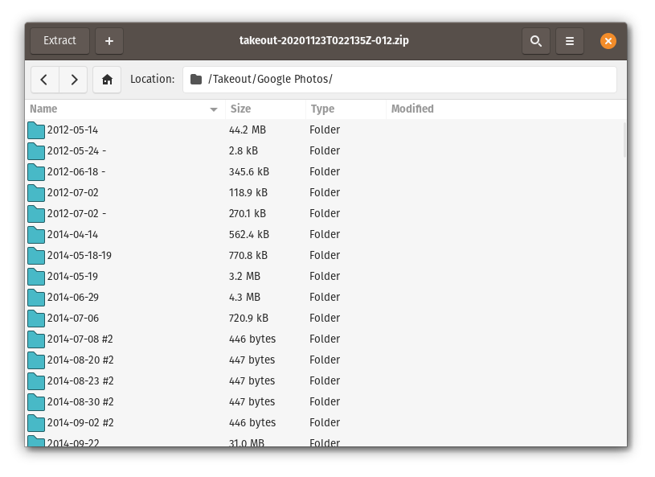
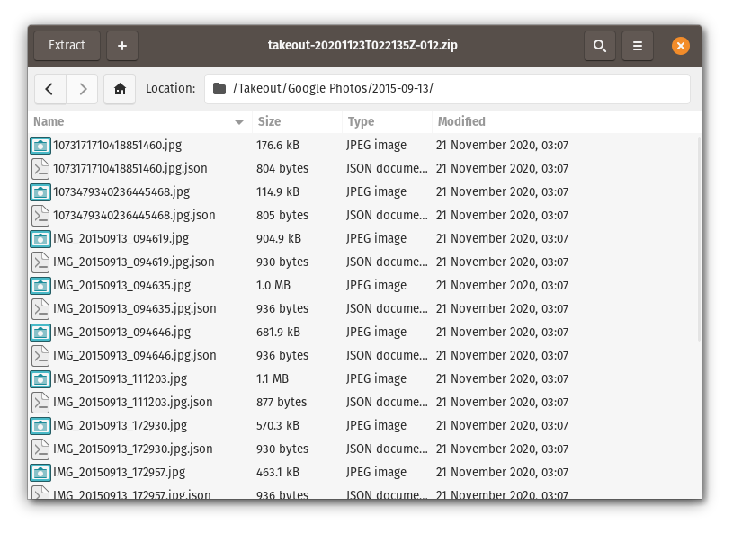
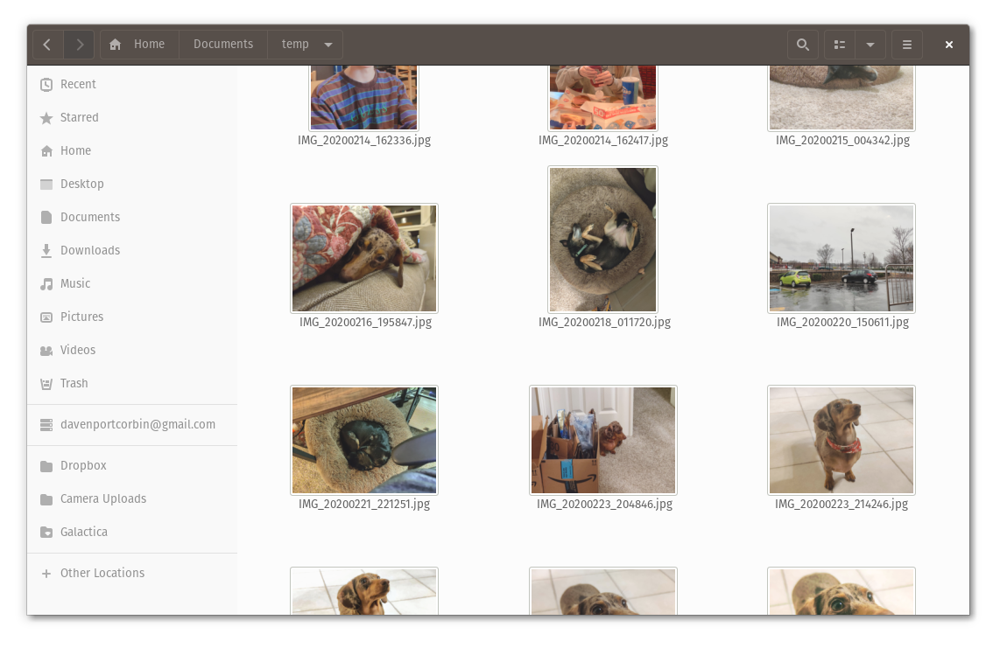
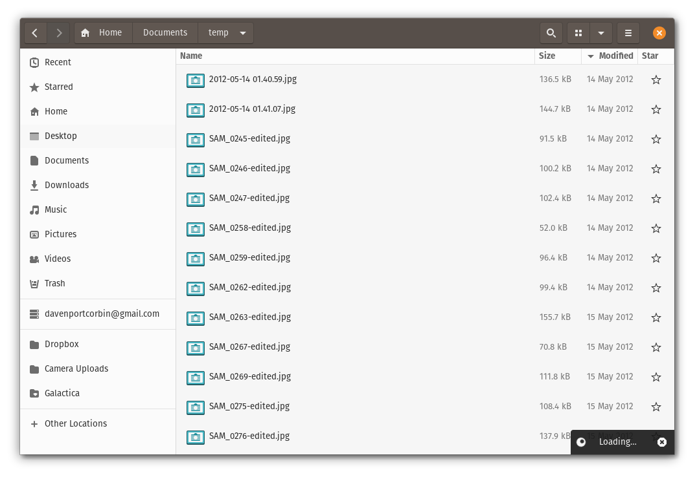

Now that Google Photos is getting rid of its free cloud storage backup, I decided to move my 6+ years of photos and videos to Dropbox. I already pay for Dropbox because it’s the only major service that supports Linux, and the mobile app backs up photos in the same manner as Google Photos. I decided to document my process here, in case it becomes useful for anyone else.
My first step was to ask for a Google Takeout of my data, which tells Google’s servers to package up everything in ZIP files. You’ll get an email when all the ZIPs are ready.
After I downloaded everything, I found out each ZIP file had nested subdirectories, which made it harder to sort through them. Some images also had accompanying JSON files with geo-location data, face tags, and the upload origin. The only information I really want to keep here is the original capture date, but most of my images already had that in the EXIF data.


My first step was to move all the images and videos into a single directory that I could easily scroll through. I emptied the Downloads folder on my PC, downloaded all the Photos ZIPs, and extracted them into their respective folders. Then I made a “temp” folder in my Documents folder, and ran these commands:
find . -name “*.jpg” -exec mv “{}” ~/Documents/temp \;
find . -name “*.mp4” -exec mv “{}” ~/Documents/temp \;
find . -name “*.m4v” -exec mv “{}” ~/Documents/temp \;
find . -name “*.mov” -exec mv “{}” ~/Documents/temp \;
find . -name “*.avi” -exec mv “{}” ~/Documents/temp \;
find . -name “*.png” -exec mv “{}” ~/Documents/temp \;
This located every image and video file from my exported data into the single “temp” directory. Your data might have other file formats, but that’s what all my files were. Now all my files were all in one place:

The battle isn’t over yet, though. The export process assigned today to the ‘Last Modified’ date on most of my files, which made it much harder to see my files in chronological order. It turns out there’s an easy fix for this — install exiv2, and run a batch operation that changes the date to the date in each image’s EXIF info:
sudo apt install exiv2
exiv2 -T rename *.jpg
Now all my images could be sorted by date in any file manager. If you have additional file formats that might store EXIF data, run that last command for each extension.

The battle still wasn’t over, though. My backup still had plenty of junk files that I had no interest in keeping, like uploaded images in old Google Hangouts conversations (usually labelled like “2015-05-20.jpg”) and photos I had shared on Google+ back when that was a thing.
I ran these command to delete all the images Google Photos had automatically applied filters to:
rm *EFFECTS.jpg
rm *EFFECTS-edited.jpg
And this command to delete all of Google Photos’ auto-generated movies (which are neat, but I never look at):
rm AUTO_AWESOME*
This process still leaves my videos and screenshots without date data, and I have to re-make all the albums I had previously. I’m sure someone will build a better way to do this eventually (by processing the JSON data for each file), but for the moment, this is enough for my needs.